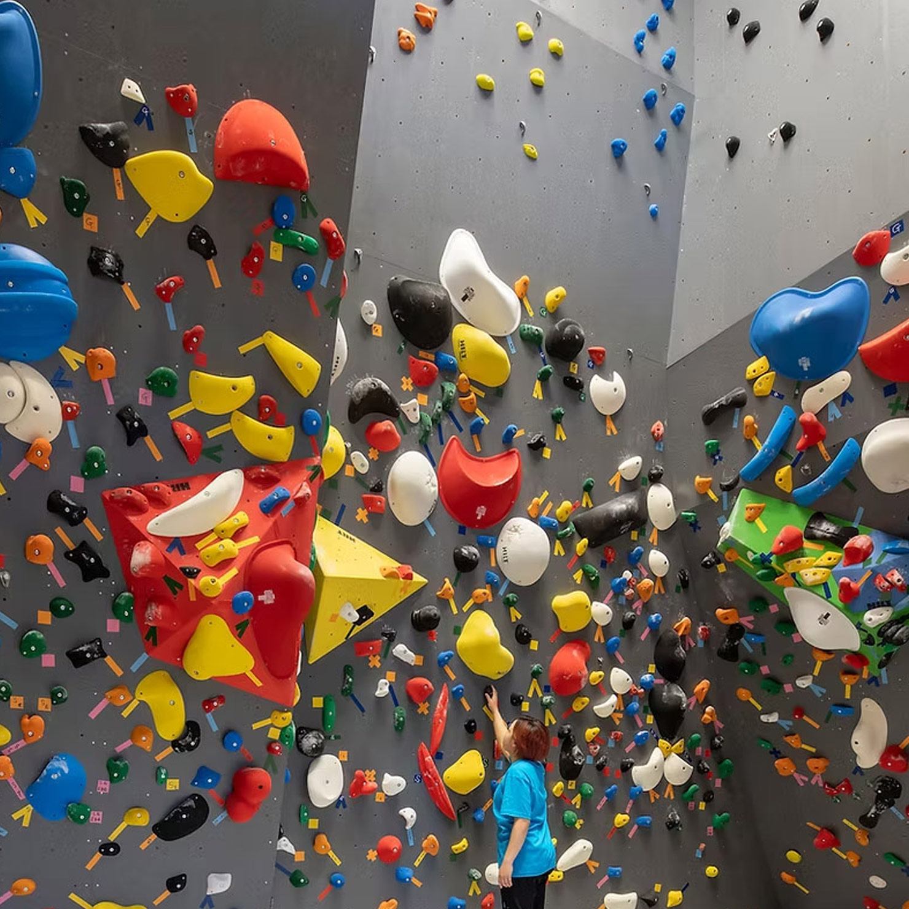

KIDSボルダリングスクール

コンセプト
ルール・マナー、ボルダリングの基礎を学びながら、ボルダリングの上達だけでなく、ボルダリングを通して、ルールを守る意識、挑戦する勇気、協調性を磨き、自己成長を促します。
- ボルダリングはどんなスポーツ？
- 開ボルダリングは、道具を使わず身体ひとつで壁を登るスポーツ。登るルートや身体の使いかたをイメージして登るため、頭も身体も使うところが、ボルダリングの特徴です。
- 開催概要
- 開催回数：月4回（各回60分）
※5週ある月は第5週目はお休みです
開催日程：
水曜日：16:30〜17:30
水曜日：17:45〜18:45
土曜日：13:00〜14:00（中級クラス） ※こちらは初級クラスから進級したお子さんが対象です。
土曜日：15:30〜16:30（初級クラス）
定員：各５〜７名
対象：小学1年生〜6年生
持ち物：動きやすい服装
スクール料金：7,480円（税込）/月額
- カリキュラム
- 1）ブリーフィング＆ウォームアップ（10分）
2）基礎：手足自由のトラバース、ぶら下がり、片手クライミング（15分）
3）応用：オリジナル課題にチャレンジ（25分）
4）クールダウン：ボルダリングウォールを使った簡単なレクリエーション（10分）
講師紹介
やない
学生時代にクライミングと出会いのめり込む。日本のクライミング文化だけではなく世界のクライミング文化に興味を持ちはじめ、１年間オーストラリアに住む近年競技化が進む中でおおよそ２０か国以上のクライマーと出会い一緒に岩場生活を送るうちにクライミングはもっとラフで自由で良いんだなと肌で実感。クライミングと並行して学生時代からピラティスやコンディショニングの勉強をし、怪我のないクライミングライフを目指す。

あさりん
社会人になりクライミングを始め、そこからクライミングジムで働く生活しはじめる。
キッズスクールを受け持つなどしてクライミングを通したコミュニティ作りの大切さに気づき、後にパタゴニアに入る。
現在は岩場やジムでのクライミングを通してクライミングの楽しさを広めている。

KIDSボルダリングスクール 嬉しい3つのポイント
①クライミングシューズレンタル無料！！
スクール参加のお子様は、クライミングシューズ・チョークのレンタル無料です。動きやすい服装お越しいただければ大丈夫。
②自主練いつでもOK！
スクール生になると、開催日以外でも、クラブが営業している時間であれば、自主練可能です！沢山練習して上達しましょう！
③初回は体験無料！
楽しめるかどうかは、一度チャレンジしてみないと分かりません。どのお子様も初回のご体験は無料でご参加いただけます。